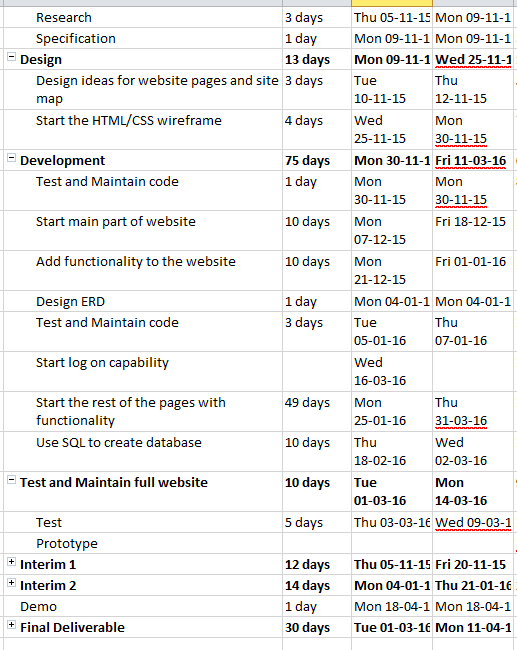

In any website navigation is essential for a smooth user experience, it has to have a clear indication of what page the user is going to view while also providing an instant search feature that can easily be used. Separating the product settings, account sign up from the features the website ensure that the user knows what parts of the website are features that it provides and not database and signing up information. Quick and easy navigation is important for the user and that is what the product provides.
Initially my first thought for the search bar was how I could make it easy for the user to search and find housemates by their preferences. Including it in the search bar in the navigation was the only logically place to put it, but hidden for when the user wants to use it. For the search bar to work AJAX calls the PHP search file depending on what the user wants and on each key entered the query is run on the database to return results.
Data can be added into the database when registering however not all sections of registration are sent to the database but the code is there for it to work. With the way the website layout is, using different PHP files to handle each form seemed the best solution to implement. Input fields that store data in the database have a JavaScript validation using RegEx to test the input against a pattern. There is then a server side validation to ensure that data is secure. I did research in ways to encrypt data that is important such as home addresses, but also could have been used to improve the security of the product. I also implemented a PHP validation system which also uses RegEx however I didn't follow this up as found using JavaScript was easier however later inputting the data to the database would have been easier.
To then change information, it is fairly simple, going to the support page and then entering the account information signed up with, it then can grab your account details and then allow the user to edit data smoothly and is shown what they are changing. At the moment the user cannot change the data as the backend file won't change the data in the database but manages to call the user ID needed. Having a lot of my files like this frustrated me as I couldn't see what my final product would look like however I can get an idea of what I wanted from using the application.
The support page provides the main backbone of the product with a lot of the changes happening there. The user can customise their profile by changing the colour of it to 7 colours giving them the feel of making something that is unique to them. It also allows the opportunity for the user to change the layout of the website if they wanted, however this is very buggy and does not work perfect but sections do move making it a starting platform for a massive improvement on the product.
Many of the websites features work on most internet browsers with Internet Explorer being the only one that may have difficulties but Chrome, Firefox and Safari all work fine with the website. Allowing users to have the option to use their preferred browser rather than having to use a selected one that works the best with the product.
The layout of each page has been kept the same throughout. Keeping it this way may it easier for me as a programmer to code but also for the user it's kept the same so there is no drastic changes that will put them off the product. It keeps the website looking neat when being used and keeps it flowing well. I believed this was the best way to design a social networking site like mine. There is headings on each page so that the user knows what it is with the titles being consistent as well.
For the social media side of the website it needs to be clear of what the user is doing, as well as being smooth and simple to use. The layout of this page uses the centre section as the main part that the user uses with the options on the side. Whether to create a new inbox for other group or housemates and if they have been messaged which is then shown while the people online are shown on the opposite side. However my messaging system in my project didn't get implemented and only got as far as putting a message table in the database, mainly because I wanted to focus on other features within the website, and expand my knowledge of PHP before giving myself a hard challenge that I would spend longer on.
The content of each page I've tried to keep to a minimum as much as I can however more text is needed on relevant pages such as the support page. This has a lot of text which may not need to be there however it provides quick access to contact information for all university departments, estate agents and gives the user a brief description of what they can do on that page. Previously spoked about, the layout ensures that the content that needs more space can be in the centre while online information, account details and other similar features to be used on the side of the website where it is smaller.
The product provides a map that shows the area of Portsmouth as well as markers with what is where. This was put in so that first year students who don't know the area are able to use this to find where buildings are, train stations or if they want to get to a halls building. This also meant that I could attempt at allowing the user to create their own location and save it on the map which could lead to more complex features such as creating a location for a meeting or house viewing and then sharing it with housemates in the group.
On the housing page and the users profile there is a section for notes. This initially was made for the user profile and would allow them to create notes to remind them of something. But later in the product development it started to get implemented in the housing page for notes to be written down about houses and times that everyone involved can see. The profile page also provides a calendar which doesn't work but shows where it will be and what it will look like as this is one of the many features that would need working on in the future. I also wanted to include groups but I didn't get round to doing however had draft code that needed testing as a table for groups was created.
The halls page provides a feature to see what surrounding flats are around the current user using the product if their accommodation was halls. The idea behind this was to allow students to meet other people quicker and easier and to see who is in what flat if that person allows it. There is little on this page developed as I ran out of time because of other parts of the website and other coursework's.
For a lot of my features to work I needed to ensure I had a log in system so that when changing data it could pull the users id instead of asking them to input their email they signed up with and then the password before they change anything.
The life cycle I followed worked well in the early stages of the project however as I got further into the making of the it, I started to lose track on testing features that had been created which then were 'gathering dust' in product directories. This is something I learnt that I won't do again as by the time the end of the product was approaching, I had to rush and test files which some would have unnecessary time spent fixing it, and if spent too long on it had to be left so that something else could be tested. Files that need to be tested and implemented to the website are saved in a folder called test.
From this project, I have learnt a lot about the web technologies especially a lot about PHP and how it is used with SQL to save data in databases. But also what else it can do such as uploading files to the server such as the notes created or the user profile picture. I also learnt that doing loads of different code at the same time can get very confusing and at times I forgot what was doing was and had to refresh my memory, also leaving a feature that is completed but not tested and working on the server has proved confusing and has cost me a lot of the features that I did want to include but didn't get round to testing implementing on the server. Regular Expressions are also something I crossed upon, using this to test against user inputted data was brilliant.
At the start of the project research into web technologies was my priority with little experience in it before this. Setting up the html wireframe proved easy compared to what was expected from the rest of the product. Coming back to start on the product after Christmas was slow and should have worked more it as I probably would have been able to test my features that I didn't get round to doing. With other bits of coursework due weeks and coming up to the deadline on this project I had to allocate my time carefully to ensure that equal amounts of work is spend. I saw from when a different assignment was due, progress on the project stopped and or slowed down which then when coming back to difficult to start back up where I left off.
Despite all this, I used tutorials online as well as the worksheets provided to help me enhance my knowledge of web technologies and when it came to PHP tutorials online were my best option as some explained what was happening very well. Towards the end of the project it did become a bit rush to get everything finished which started to get a bit overwhelming at some points. Little testing was done in other browser but mostly in chrome but does have code used to work on other browsers.
This project has taught me that sticking to a schedule is essential for you to hit the deadline, which when you start to fall off track then I should have worked harder or rescheduled my time on the work. I am pleased with how my product turned out and although it wasn't fully finished I have go files that need testing and putting in as well as all pages completed so if anyone does continue it then they have an idea of what does what from looking at each page. I would want to finish this product as I have come this far not to see it get finished, I have also grown to really enjoy coding in web languages and looking to continue doing so, so following this product up will give me good practice for the future.